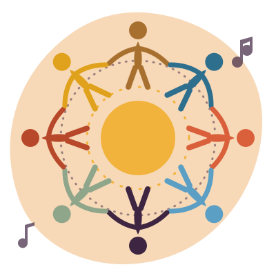
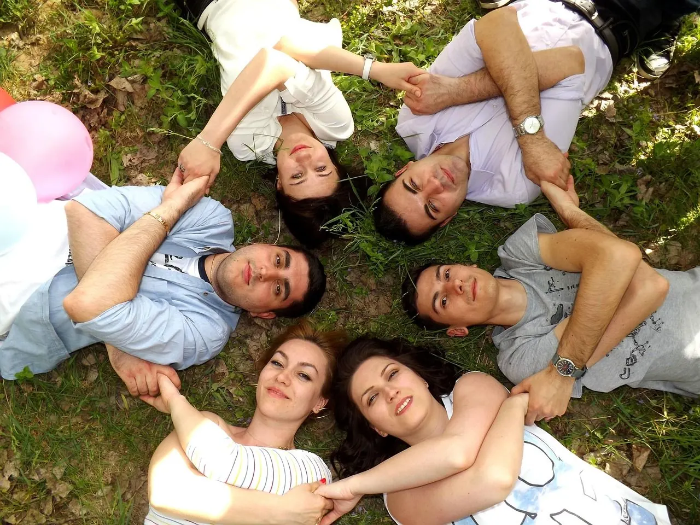
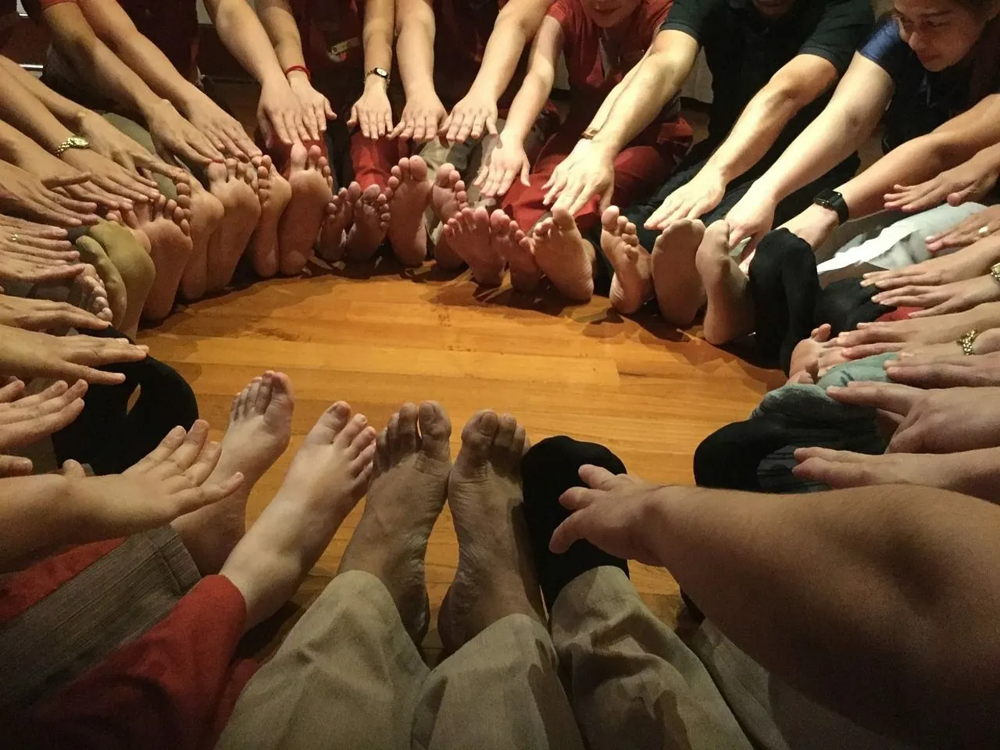

Per il corpo
Ti muovi in modo naturale e piacevole, sciogli le tensioni accumulate e ritrovi energia e vitalità.
Pescara · Montesilvano
Biodanza, la danza della vita
Una serata a settimana per staccare dai pensieri, muoverti come ti senti e ritrovare energia e leggerezza, insieme ad altre persone.

Cos'è la Biodanza
La Biodanza è un'attività di gruppo che usa la musica, il movimento e l'incontro con gli altri per farti stare bene.
Non è una lezione di ballo e non è uno spettacolo: nessuno ti guarda o ti giudica. Si propongono semplici esercizi in musica, da soli, in coppia o in cerchio, e ognuno li vive a modo suo, con i propri tempi.
È stata ideata dallo psicologo e antropologo cileno Rolando Toro e oggi si pratica in tutto il mondo.

Ti muovi in modo naturale e piacevole, sciogli le tensioni accumulate e ritrovi energia e vitalità.
La musica aiuta a lasciar andare lo stress e a dare spazio alla gioia, alla calma, alla tenerezza.
Si sta in gruppo in un clima accogliente: si sorride, si conoscono persone nuove, ci si sente meno soli.
Ti stai chiedendo se fa per te?
Due percorsi
Serate per adulti e incontri pensati apposta per bambini e ragazzi.
Com'è una serata
Ci si toglie le scarpe, ci si saluta, ci si mette comodi. Se è la tua prima volta ti spiego tutto io.
Ci sediamo in cerchio: chi vuole racconta come sta, poi ti presento la serata.
Ti propongo semplici esercizi in musica: camminare, muoversi liberamente, danzare da soli, in coppia o in gruppo. Prima brani vivaci, poi via via più lenti e rilassanti.
Si torna in cerchio per salutarsi. Di solito si esce più leggeri, più calmi, con il sorriso.

Non guardiamo l'orologio. Ogni incontro dura dai 90 ai 120 minuti: la durata è flessibile di proposito, perché il tempo segue il gruppo. Al corpo serve il suo tempo per lasciarsi andare e rilassarsi davvero, e non vogliamo interrompere quel momento.
Abiti comodi in cui ti senti a tuo agio, una bottiglia d'acqua e, se vuoi, calze antiscivolo. Si danza scalzi o in calze.
Niente abbonamenti lunghi
L'anno è diviso in brevi cicli di 8 incontri, ognuno ispirato a un elemento della natura. Ti iscrivi un ciclo alla volta e decidi tu se continuare.
 Autunno
Autunno
Radicarsi, ripartire dopo l'estate, ritrovare stabilità e fiducia nel proprio corpo.
 Inverno
Inverno
Emozioni, accoglienza e tenerezza: imparare a lasciarsi andare e a fluire.
Energia, entusiasmo e coraggio di esprimersi: risvegliare la propria forza vitale.
 Primavera
Primavera
Leggerezza, gioia e creatività: sentirsi liberi, giocare, inventare.
D'estate si danza all'aperto, in serate libere a ingresso singolo: senza impegno, con i piedi nella sabbia.
Arrivi a ciclo già iniziato? Nessun problema: provi gratis e, se ti piace, paghi solo gli incontri che restano.
Dove e quando
Le attività si svolgono nell'ambito dell'associazione [Nome ASD/APS]: per partecipare serve la tessera associativa annuale, che comprende anche l'assicurazione. Per la serata di prova non serve nulla.
Ogni ciclo inizia con una serata aperta gratuita, pensata per chi vuole provare. Scrivimi e ti dico la data della prossima.
Chiedi la data su WhatsAppCosti e agevolazioni
Vieni, prova e decidi con calma. Se ti piace, ti iscrivi al ciclo: niente vincoli lunghi, solo 8 incontri alla volta.
I prezzi cambiano con le stagioni: chiedimi il listino aggiornato.
Chi sono
Accompagno le persone a ritrovare vitalità, calma e contatto con sé stesse e con gli altri, attraverso la musica e il movimento.
Ho incontrato la Biodanza nel 2013 e da allora non l'ho più lasciata: dal 2014 mi formo nella Scuola di Biodanza® dell'Adriatico. Negli anni ho condotto gruppi di bambini, ragazzi, adulti e persone anziane, in associazioni, palestre e progetti sociali. Mi interessa creare spazi sicuri e accoglienti, dove ognuno si sente libero di essere com'è, senza giudizio.

Dicono di noi
"[Testimonianza 1]"
"[Testimonianza 2]"
"[Testimonianza 3]"
Domande frequenti
No. Il contatto con gli altri è sempre graduale, rispettoso e facoltativo: si inizia con gesti semplici come darsi la mano in cerchio, e sei sempre tu a decidere fin dove ti va di arrivare.
È normalissimo, la prima volta capita a tutti. Nessuno ti guarda o ti giudica, e se un esercizio non ti va puoi fermarti e osservare. Di solito l'imbarazzo passa dopo pochi minuti.
No. La Biodanza non è legata a nessuna religione o credo: è un'attività di gruppo per il benessere, basata su musica, movimento e incontro. Puoi viverla con la tua sensibilità e le tue idee.
Di solito tra [8 e 20] persone: abbastanza per sentire l'energia del gruppo, abbastanza poche per conoscersi.
La prima serata è gratuita. Poi ti iscrivi a un ciclo di 8 incontri alla volta, senza abbonamenti lunghi. I prezzi variano con le stagioni e ci sono diverse agevolazioni: chiedimi il listino.
Quasi sempre sì: ognuno si muove secondo le proprie possibilità e si può partecipare anche in modo molto dolce. Se hai problemi di salute importanti parlane prima con il tuo medico e raccontamelo, così posso tenerne conto.
No, la maggior parte delle persone arriva da sola. Ma se vuoi portare un'amica o un amico, c'è un'agevolazione per tutti e due.
Contatti
Il modo più veloce è WhatsApp: scrivimi senza impegno, ti rispondo io.
Preferisci scrivere qui? Compila il modulo e ti ricontatto io, di solito entro un giorno.